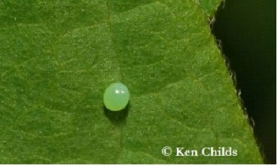

With a mean declination of approximately -73 degrees, it can only be viewed from the Southern Hemisphere and the lower latitudes of the Northern Hemisphere. It is located mostly in the constellation of Tucana and also partly in Hydrus and appears as a hazy, light patch in the night sky about 3 degrees across, looking like a detached piece of the Milky Way. Since it has a very low surface brightness, it is best viewed from a dark site away from city lights. It forms a pair with the Large Magellanic Cloud (LMC), which lies a further 20 degrees to the east, and like the LMC is a member of the Local Group.
Egg

It all starts when a female butterfly lays her eggs, usually on leaves or stems of plants. Inside these tiny eggs, caterpillars grow. Depending on the species, the eggs can vary in shape and texture - they can be round, oval or cylindrical, and smooth, bumpy or wrinkled. The time it takes for the eggs to hatch can also vary - in some species, they will hatch within a few weeks and in others they will only hatch once the weather is warm enough other microscopic structures. The female attaches the egg to leaves, stems, or other objects,the egg usually on or near the intended caterpillar food. (Note: photograph is a Snowberry Clearwing egg.).
Go to next Page